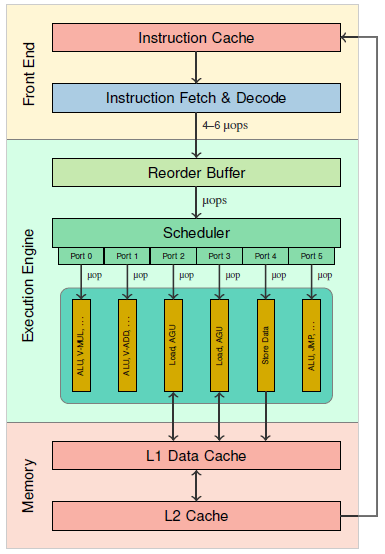

Knowledge of the latency, throughput and port usage is necessary for building performance-analysis tools, cycle-accurate simulators, and optimzing compilers. It is also helpful when manually fine-tuning a piece of code for a specific processor. Unfortunately, this information is only poorly documented in the official processor manuals.
We have developed a technique to automatically generate microbenchmarks for measuring these properties. On this website, we present latency, throughput and port usage data for all generations of Intel's core microarchitecture that were obtained using these microbenchmarks.

The figure on the right shows the general structure of the pipeline of Intel Core CPUs. The pipeline consists of the front end, the execution engine (back end), and the memory subsystem. The front end is responsible for fetching instructions from the memory, and for decoding them into a sequence of microoperations (μops).
The reorder buffer stores the the μops in order until they are retired. It is also responsible for register allocation (i.e., mapping the architectural registers to physical registers), and register renaming (to eliminate false dependencies among μops).
The μops are then forwarded to the scheduler (also known as the reservation station), which queues the μops until all their source operands are ready. Once the operands of a μop are ready, it is dispatched through an execution port. Due to out-of-order execution, μops are not necessarily dispatched in program order. Each port (Intel Core microarchitectures have 6, 8, or 10 of them) is connected to a set of different functional units. Each port can accept at most one μop in every cycle. However, as most functional units are fully pipelined, a port can typically accept a new μop in every cycle, even though the corresponding functional unit might not have finished executing a previous μop.
The latency of an instruction is commonly defined as the "number of clock cycles that are required for the execution core to complete the execution of all of the μops that form an instruction" (assuming that there are no other instructions that compete for execution resources). Thus, it denotes the time from when the operands of the instruction are ready and the instruction can begin execution to when the results of the instruction are ready.
This definition ignores the fact that different operands of an instruction may be read and/or written by different μops. Thus, a μop of an instruction I might already begin execution before all source operands of I are ready, and a subsequent instruction I' that depends on some (but not all results) of I might begin execution before all results of I have been produced.
To take this into account, we therefore provide separate latency numbers for each pair of input and output operands.
When comparing throughput data from different publications, it is important to note that these publications do not all use the same definition of throughput. Intel defines throughput in its manual as follows:
"The number of clock cycles required to wait before the issue ports are free to accept the same instruction again."
On the other hand, Agner Fog uses the following definition for (reciprocal) throughput:"The average number of core clock cycles per instruction for a series of independent instructions of the same kind in the same thread."
These two definitions are not equivalent, as there can be factors other than contention for the issue ports that may reduce the rate at which instructions can be executed (e.g., the front end, or the memory subsystem). Moreover, it is not always possible to find instructions of the same kind that are truly independent, as many instructions have implicit dependencies on certain registers or flags. Hence, the second definition may yield higher throughput values (corresponding to a lower throughput) than the first definition for the same instruction.
We provide throughput values according to both definitions.
We use the following notation for the port usage: 3*p015+1*p23, for example, denotes an instruction with four μops; three of these μops can each be executed on ports 0, 1, and 5, and one μop can be executed on ports 2 and 3.
We developed algorithms that generate assembler code for microbenchmarks to measure the properties of interest for most x86 instructions. Our algorithms take into account explicit and implicit dependencies, such as, e.g., dependencies on status flags.
We ran the generated microbenchmarks both on the actual hardware (using nanoBench) and on top of different versions of Intel IACA.